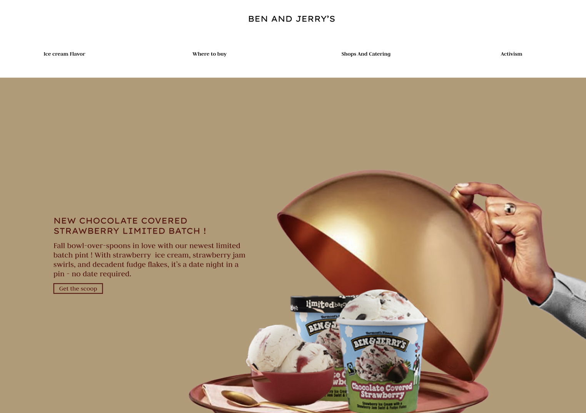

Codage
Site de musique codée en HTML, CSS et Javascript
Voir le projet

Refonte
J’ai reproduit la page d’accueil du site Ben & Jerry’s sur Figma, en revisitant son design dans un style plus haut de gamme. L’objectif était d’explorer une approche visuelle orientée luxe, tout en conservant l’identité de la marque.
Voir le projet